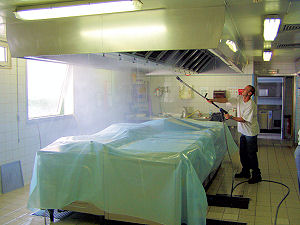

Nettoyage et dégraissage des ventilations de cuisines professionnelles
Le nettoyage et le dégraissage périodique des ventilations de cuisines est une opération indispensable pour le confort des cuisiniers
mais aussi pour l'hygiène et la sécurité des clients.
La graisse et la saleté peuvent facilement s’accumuler dans la hotte aspirante de votre cuisine.
Par conséquent, elle peut devenir un terrain fertile pour les bactéries et autres matières indésirables tels que la moisissure.
Afin d’éviter une telle situation, contactez Cleanhotte pour obtenir un service professionnel de nettoyage de hotte d’aspiration.
